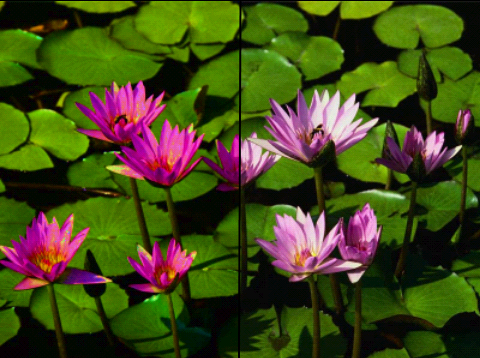

- java.lang.Object
-
- com.madrobot.graphics.bitmap.EnhancementFilters
-
public class EnhancementFilters extends Object
Basic bitmap enhancement operations.Exposure
Normal Image Exposure set to 3 

Gain and Bias
Gain and bias with each set to 0.10 . Adjustment applied to one half of the image. the remaining half is the normal image

Gamma
Gamma with all three channels set to 0.75. Adjustment applied to one half of the image. the remaining half is the normal image

DeSpeckle
HSB adjust
HSB adjusted withhFactorset to 0.5 andsFactorset to 0.5. . Adjustment applied to one half of the image. the remaining half is the normal image

RGB adjust
RGB adjusted withrFactorset to 0.5 andgFactorset to 0.5. . Adjustment applied to one half of the image. the remaining half is the normal image

-
-
Constructor Summary
Constructors Constructor and Description EnhancementFilters()
-
Method Summary
Methods Modifier and Type Method and Description static BitmapadjustHSB(Bitmap src, float hFactor, float sFactor, float bFactor, OutputConfiguration outputConfig)Adjust the HSB componentsstatic BitmapadjustRGB(Bitmap src, float rFactor, float gFactor, float bFactor, OutputConfiguration outputConfig)Adjust RGB components.static BitmapcorrectGamma(Bitmap src, float rGamma, float gGamma, float bGamma, OutputConfiguration outputConfig)Correct Gamma for individual channelsstatic BitmapdeSpeckle(Bitmap src, Bitmap.Config outputConfig)A filter which removes noise from an image using a "pepper and salt" algorithm.static BitmapreduceNoise(Bitmap src, Bitmap.Config outputConfig)A filter which performs reduces noise by looking at each pixel's 8 neighbours, and if it's a minimum or maximum, replacing it by the next minimum or maximum of the neighbours.static BitmapsetBrightnessAndContrast(Bitmap src, float brightness, float contrast, OutputConfiguration outputConfig)Set the brightness and contrast of the given bitmapstatic BitmapsetExposure(Bitmap src, float exposure, OutputConfiguration outputConfig)Set the exposure of the bitmapstatic BitmapsetGainAndBias(Bitmap src, float gain, float bias, OutputConfiguration outputConfig)Adjust the gain and bias for the given imagestatic Bitmapsharpen(Bitmap src, int edgeAction, boolean processAlpha, boolean premultiplyAlpha, Bitmap.Config outputConfig)A filter which performs a simple 3x3 sharpening operation.
-
-
-
Method Detail
-
sharpen
public static Bitmap sharpen(Bitmap src, int edgeAction, boolean processAlpha, boolean premultiplyAlpha, Bitmap.Config outputConfig)A filter which performs a simple 3x3 sharpening operation.- Parameters:
src-edgeAction- use the EdgeAction constants defined inBitmapFilters. Recommended:BitmapFilters.CLAMP_EDGESprocessAlpha-premultiplyAlpha-outputConfig-- Returns:
-
setGainAndBias
public static Bitmap setGainAndBias(Bitmap src, float gain, float bias, OutputConfiguration outputConfig)Adjust the gain and bias for the given image- Parameters:
src-gain- min:0 max:1. recommended: 0.5.bias- min:0 max:1. recommended: 0.5.outputConfig-- Returns:
-
correctGamma
public static Bitmap correctGamma(Bitmap src, float rGamma, float gGamma, float bGamma, OutputConfiguration outputConfig)Correct Gamma for individual channelsFor best results all three channels should have the same gamma value
- Parameters:
src-rGamma- min:0 max:1. recommended: 1gGamma- min:0 max:1. recommended: 1bGamma- min:0 max:1. recommended: 1outputConfig-- Returns:
-
setExposure
public static Bitmap setExposure(Bitmap src, float exposure, OutputConfiguration outputConfig)Set the exposure of the bitmap- Parameters:
src-exposure- min:0 max:5outputConfig-- Returns:
-
reduceNoise
public static Bitmap reduceNoise(Bitmap src, Bitmap.Config outputConfig)A filter which performs reduces noise by looking at each pixel's 8 neighbours, and if it's a minimum or maximum, replacing it by the next minimum or maximum of the neighbours.- Parameters:
src-outputConfig-- Returns:
-
deSpeckle
public static Bitmap deSpeckle(Bitmap src, Bitmap.Config outputConfig)A filter which removes noise from an image using a "pepper and salt" algorithm.- Parameters:
src-outputConfig-- Returns:
-
setBrightnessAndContrast
public static Bitmap setBrightnessAndContrast(Bitmap src, float brightness, float contrast, OutputConfiguration outputConfig)Set the brightness and contrast of the given bitmap- Parameters:
src-brightness- min:0 max:2.contrast- min:0 max:2.outputConfig-- Returns:
-
adjustHSB
public static Bitmap adjustHSB(Bitmap src, float hFactor, float sFactor, float bFactor, OutputConfiguration outputConfig)Adjust the HSB components- Parameters:
src-hFactor- scale from 0...1sFactor- scale from 0...1bFactor- scale from 0...1outputConfig-- Returns:
-
adjustRGB
public static Bitmap adjustRGB(Bitmap src, float rFactor, float gFactor, float bFactor, OutputConfiguration outputConfig)Adjust RGB components.- Parameters:
src-rFactor-gFactor-bFactor-outputConfig-- Returns:
-
-